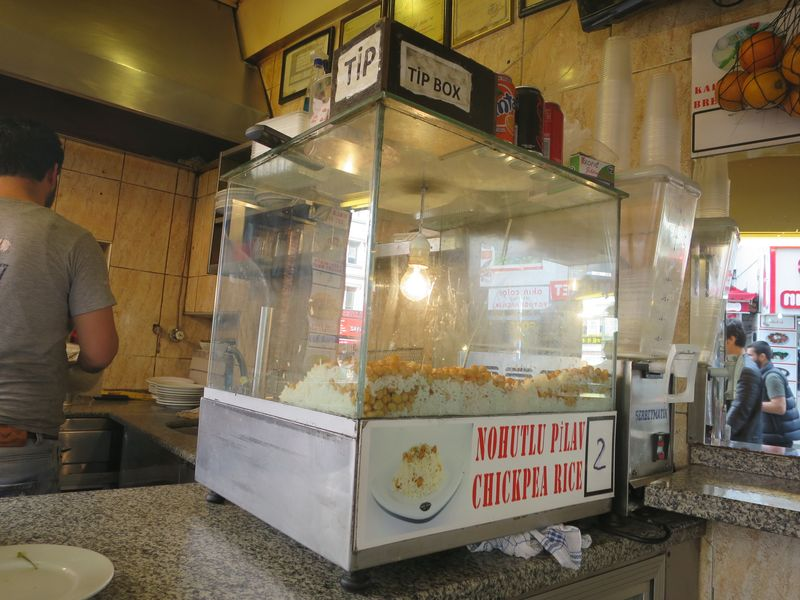
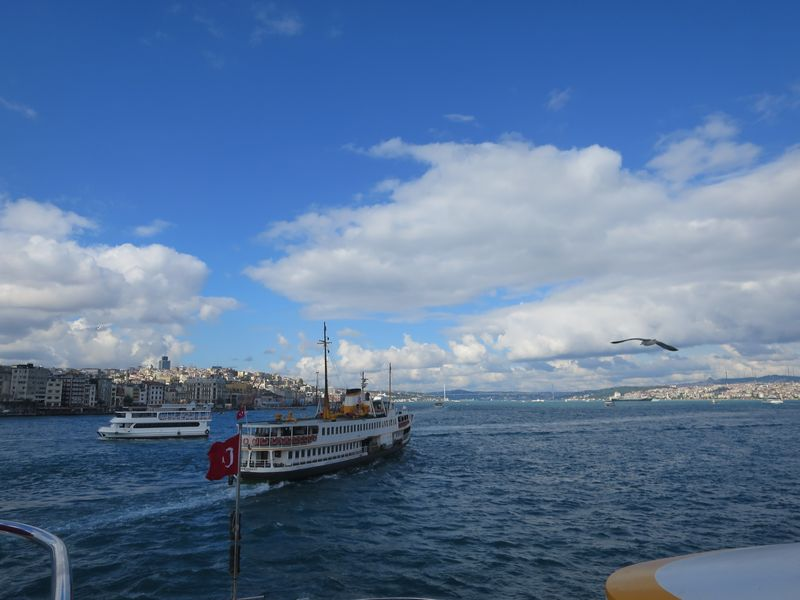
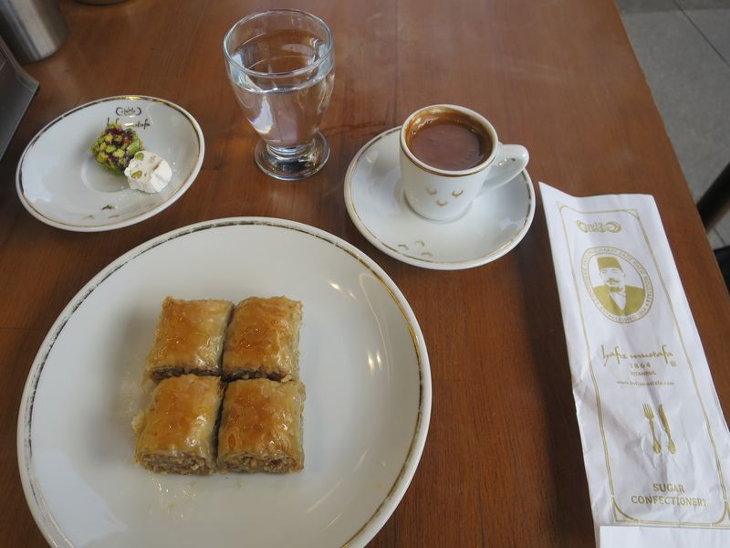
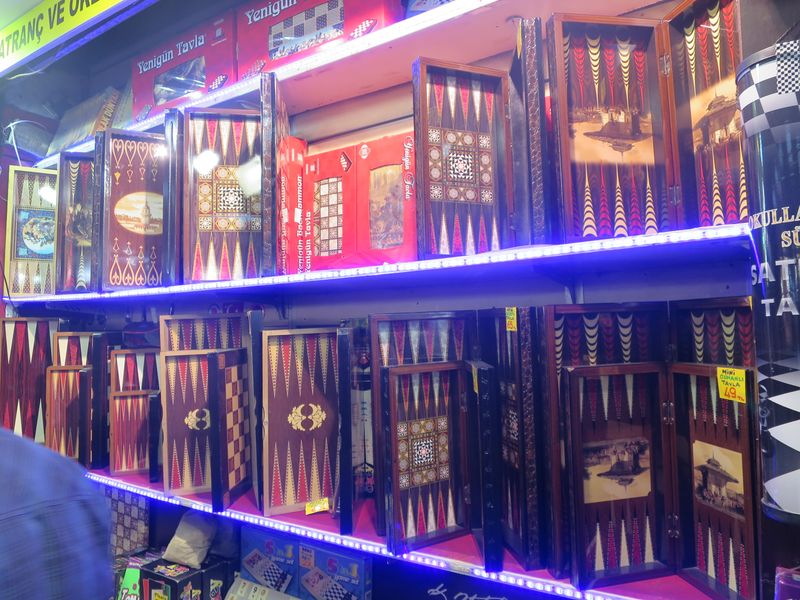
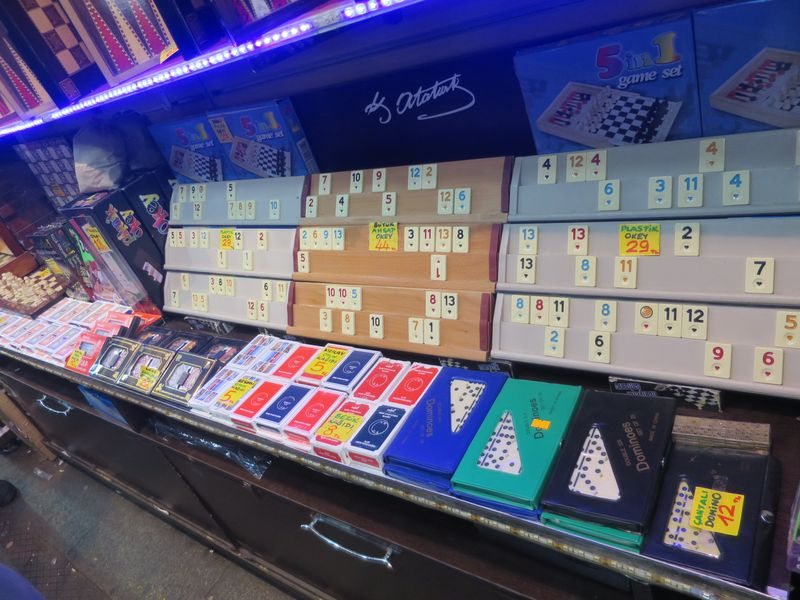
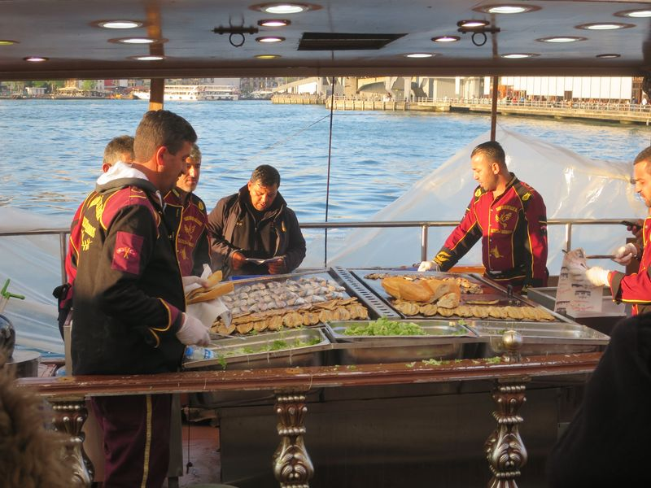

五月六日 (五)
早餐後再去甜品店食 Laz böreği 才去機場，去機場的小巴就在廣場後面的街，又是 1.75 TL，由 Trabzon 去 Istanbul 的機今次的航班快了只用個半鐘，搭的是廉價航空 Onur Air，飲品食物要額外付錢。
回到 Istanbul 的 Atatürk Airport，轉 metro 和 tram，好擠迫，不知道和多人有沒有關係，很久才到 Sultanemat 站，用了個多小時。走去 Babaus Hostel，因為之前弄錯了日期，所以幾天前再上網訂房，但那個員工要收我 50 EUR 因為我要一間房所以要付兩個人的錢，但之前那個員工不是這樣說，還說只收我 20 EUR。我說我不要了走了，那人即時變臉，又說走吧是我的損失，他還會在我的信用卡扣足 50 EUR 的。
我心想我都沒填過任何付款的資料，不理他。走去我第一天住的 Mansion by Cheers，一入去旅館老闆竟然認得我，說今天客滿了，不過他卻幫我安排我去另一間，20 EUR 一間房。就在附近的，叫做 Cheers Lighthouse，原來是同一家族，不過 Cheers Lighthouse 比較高級，房好靚，和酒店差不多，但只用 20 EUR，我上網查查是不只的，但我想是因為現在都不早了未必有新客，而且是介紹過來所以才有這麼便宜，好多時 walk in 也有好處呢。
行去 Eminönü 區途中竟然有個印尼女遊客向我問路，她問的是去 Grand Bazar，我竟然教了她如何去，而我自己其實是未去明天才去的。和兩個多星期之前來 Istanbul 不同，我感覺好輕鬆。
在一間小食店吃了個超抵的 chicken döner kebab，4 TL，好大件，好足料雞肉多到喊。由碼頭 4TL 搭船過海去 Üsküdar，經過一小段 Bosphorus，這是歐亞之間的天然海峽，Bosphorus 兩岸有好多古蹟和歷史，但要參加半天的導遊團。我沒有參加，只在這裏搭船過海，坐在露天的櫈，超級大風和寒冷，但風景好正，吹到傻之後落船，搭火車回去 Eminönü 那邊，搭的是 Marmaray，2013 年底才通車的海底隧道火車，也是 4 TL，找不到賣 token 的機器，原來是賣票的，用完還可以留下做紀念。
這裏真是可以食得好平，又可以食得好貴。好像我向碼頭方向行的時候見到一間甜品店 Hafız Mustafa，又入去試了些甜品，一碟四件仔嘢加杯啡就成 20 TL。不過，超級好味！
然後在碼頭又食過，行過了 Galata Bridge，才見到那些賣 balık-ekmek (fish sandwiches) 的船，那些著晒制服的船員，在船上煎魚，8 TL 一件。每隻船的岸前密密麻麻排放了矮枱和櫈仔。好多好多當地人食，外面又有些賣飲品的，見人家好開心地喝著一杯紅色的東西，我又叫來飲，是糖水中浸著大量酸瓜，真的一次就夠。
同時，這裏有好多好多乞兒，多數是細路，有些要錢，有些就想要三文治。這裏又有座好美麗的清真寺 Yeni Cami，對開的廣場有很多人聚集，亦有武警看著，好多好多的鴿子飛來飛去，黃昏時特別好看。
日照時間長就是有好處，八時半才日落，多了好多時間，上去 Galata Bridge 慢慢行，引遇到那些以單身男為目標的男子，今之呢個自稱來自沙地阿拉伯，明早就要飛，今晚去蒲，我都唔識蒲，一陣又要我埋單，你自己蒲飽佢啦。
日落天黑後行回去 Sultanemat 途中，又遇一個，自稱來自塞浦路斯，真係多塞浦路斯人，又係同我傾偈又叫我幫佢影相之類，又係聽朝就飛去唔知邊，我又唔煙又唔酒掃晒佢興，問我去附近嘅 pub 我話我返歸喇，佢突然話我唔信任何人氣匆匆咁走咗，做咩喎，又係我唔啱。
然後又經過一間 carpet 店店內的人要我入去，話唔買都得又話當認識下佢哋傳統嘅 carpet，仲要話 you are not obligate to buy but you are obligate to drink tea when you are invited，講到咁大件事唔尊重佢哋文化就坐低飲，聽完佢介紹啲 carpet 又話佢哋呢個月好慘未做過生意，又話今日星期五如果我買就會帶佢好運，我話唔買佢即刻變臉，呢日我都見唔少變臉。






2016 Turkey
❮ Previous
Next ❯